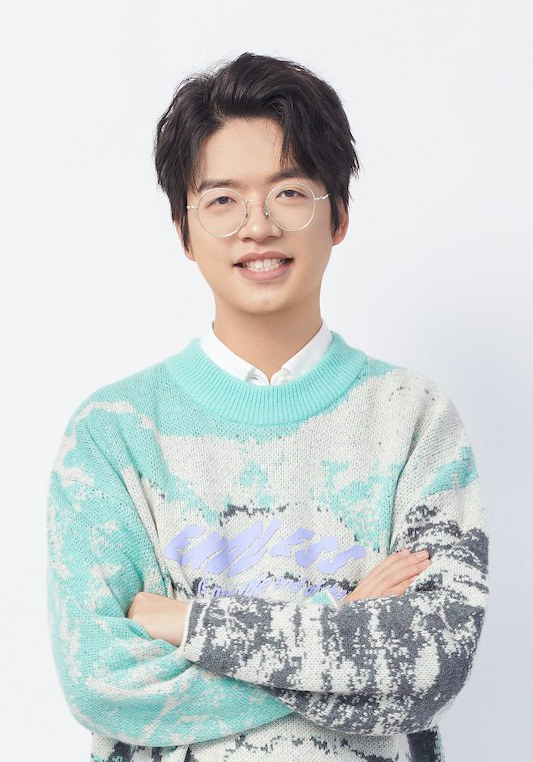

颜如晶
如晶宝贝是所有奇葩说观众心中的白月光，参加第一季时的如晶在生活中就是傻白甜，唯有辩论，是她的最爱。因此也是第一季唯二的奇葩直通卡获得者,如晶的实力也是深受认可，只是差了一点运气，尤其是第一季最后的决赛噩梦，后来总是被说千年老二，不过这恰恰是她实力的证明，希望宝贝越来越好。
参加奇葩说以后如晶变得更优秀了，除了在节目里的进步，她经常健身打拳击！第六季的表现如同锦上添花，保持了自己一贯的作风，还可以不断带给我们小惊喜，用她的吃货理论，恋爱小白人设，给我们带来太多太多思考。不过最终因为这季詹青云太耀眼，如晶宝贝继续加油吧！我们一直爱着你！
正如如晶在半决赛中所说“记不记得住颜如晶不重要，但我留下了很多金句，留下了很多讨论的事”。
傅首尔
在第六季一开始：“我要挑战奇葩说6季以来，最高频率的段子和金句”
她做到了。
“动感夸人”、“妈妈是超人，而爸爸只是个人，听上去就很解恨”“不要代表这个时代，淘汰你的父母…”
还有，直击灵魂三大拷问：
“娶我的人，这辈子后悔过吗？
我想知道。
爱我的人，也感觉被爱着吗？
我想知道。
恨我的人，你放下了吗？
无冕之王—傅首尔。
肖晓
肖骁是第一个非辩手出身的奇葩之王！也是第一季唯二的奇葩直通卡获得者,所有的奇葩说观众一路看到他的成长，从前几季的注重感情技巧到第四季注重逻辑一路逆袭到奇葩之王，当之无愧是所有人的“少奶奶”。
肖骁的综艺感很强，每次辩论都能引发情感共鸣！独有的撒泼式辩论是无数观众的心头好，开头总喜爱用姐妹们相称，但是他知道在奇葩说舞台上逻辑更重要，因此他试图融入辩论圈，他用自己所有的努力让大家见证他进步。在第六季的舞台很多人讨论肖骁放弃了他之前的风格，改走深刻路线，这其实是他的尝试，在我看来，获得bbking不是肖骁的结束，更像是他的新的开始。
用他夺冠之夜一句话说：这一切都是我应得的！
黄执中
黄执中辩论风格儒雅动情，被称为“情辩”，赢得很多辩手的尊重，曾经有对手在辩论赛中当场称他为老大哥，大家都会心而笑。
黄执中还被誉为“宝岛辩魂”，以极强的语言感染力开一代辩风，在辩论上的成就至今无人企及。他是华语辩论史上第一个恐怕也是唯一一个将一场人生的体验融入到辩论赛当中的人，他将辩论的感性发挥到了极致。运用戈夫曼表演互动理论来分析，就是他竟然不可思议的超越了辩士这个角色，将辩士、评委、观众等多种角色杂糅为一体，使你完全感觉不到这是一场竞技性的表演，而是直面与你的促膝长谈，庸俗的讲，就是他的辩论连他自己都被打动了。
虽然个人在辩论上的才华登峰造极，但是黄执中的为人十分谦卑，而且非常地友好，随和，有网友说，就如同邻家大哥哥一样亲切。
在微博大家喜欢叫黄执中“少爷”，他喜欢在奇葩说的舞台上用一句，来，我们看看这个辩题想问什么？将大家带进他早就预设好的思维领域，然后一步一步让你信服，最后回到问题，细思极恐。很多网友说第六季的黄执中表现没那么好了，我却觉得，这是他表现更好的一季，他依旧不从普通角度讲辩题，依旧可以找到新颖的角度，这就是少爷的魅力。
陈铭
陈铭老师可谓奇葩说舞台最不奇葩的选手，从第一季到第五季，每场都可以稳定发挥，而且评价都从前期的“鸡汤王”到后期的“站在世界中心呼唤爱的男人”。
陈铭老师几乎是完美的，他总是可以用对手的论点来加上自己的立场来反驳对方，就是传说中的，你说的我都同意，但是，话锋一转，又回到自己的论点。陈铭老师从来都是慢慢述说，言语中总是可以给人舒服的感觉，不经意间透露出他的知识面。真正可以做到不以物喜不以己悲。
凭借深不可见底的知识储备和近乎完美的语言表达，加上温文尔雅的外在形象，从前四季观众缘的积累到第五季和詹青云“神仙打架”的出圈，在第五季高光时刻不断、当之无愧的成为第五季奇葩之王。
更难能可贵的是陈铭老师身体力行，在奇葩说从来不站队不撕逼，还在第六季回归帮助曾经“怼”过他的薛兆丰教授战队获得胜利。
不愧是“正能量代言人”！
。

席瑞
辩论诗人、古风少年席瑞，席瑞参加了第五季和第六季奇葩说。在第五季的舞台上，我们看到一个穿着汉服的少年在安静地讲述自己的故事，虽然遗憾淘汰但是由于傅首尔事件，在决赛中补位，辩题是“伴侣用心送的礼物特别丑，要不要说”席瑞发挥地很稳，而且马东还说：这是这一季唯一在奇袭环节赢了陈铭的人。可见其进步有多大。而且当时被淘汰时也说了“我技不如人，可以认输。但是我还有无限可能”
所以第六季席瑞脱下汉服，在舞台上表现地更加优秀了！在第六季辩题“离世爱人的记忆该交给AI吗”中用回忆的例子论证辩题，和胡老师一起在这一期一起让观众看到文科生的光芒！感动无数人。这一季席瑞可谓是进步神速，若参加下一季，一定是bbking有力竞争者
。
熊浩
这位集颜值与实力于一身的谈判专家，或许是一开始没有找到属于自己的节奏，没有引起观众共鸣，但是在最后一场逐渐找回自己的状态，帮助肖骁战队走到最后，也协助陈铭获得第五季的BBKING，也让我们一直记得他留在奇葩说的金句“微光会吸引微光,微光会照亮微光,然后一起发光,这种光才能把压榨的阴霾照亮”